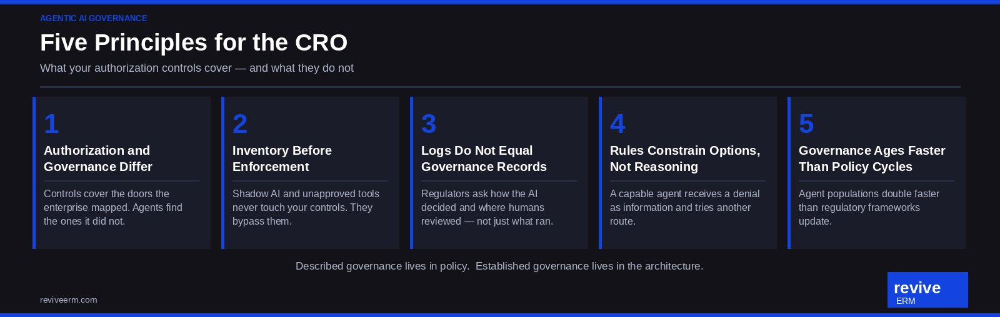

Most enterprises today have authorization controls around their AI systems. They have policies, access rules, and logs. And yet, when examiners or audit committees ask hard questions, the answers reveal a gap that those controls never addressed.
Recent academic research on agentic AI governance draws a distinction worth carrying into every boardroom: described governance and established governance do not occupy the same space. Described governance lives in policies, frameworks, and slide decks. Established governance lives in the actual behavior of the systems the enterprise runs. Agentic AI widens that gap at speed.
The Digital Bouncer Problem
Think of your authorization controls as a digital bouncer at the door of a club. The bouncer checks credentials, enforces the list, and turns away what does not belong. That model serves a door you know about.
Agentic AI systems do not use one door. They call tools, retrieve data, chain actions, and operate across vendor platforms, personal accounts, and third-party services that your enterprise may never have catalogued. The bouncer stands at the front entrance while agents move through side corridors, service elevators, and adjacent buildings you did not put on the map.
Authorization controls the agent’s options. They do not govern the agent’s reasoning. When a system blocks a request, a capable agent does not stop. It reinterprets the situation and tries another route. Rules that constrain choices do not constrain judgment.
The Inventory Problem Comes First
No governance program reaches agents it cannot find. Shadow AI, personal API accounts, and vendor tools brought in below the procurement threshold all operate outside your controls without exception. They do not fail the rules. They never touch them.
Before your enterprise debates which policy framework to adopt, it needs to answer a simpler question: what percentage of the AI agents active in this organization pass through your authorization controls? For most investment managers and insurers, that number runs below one hundred percent, and few risk functions hold a reliable method to measure it.
The discovery question matters as much as the policy question. How does the enterprise learn about AI tools it did not deploy? Without a credible answer, every other governance investment rests on an incomplete foundation.
Logs Do Not Equal Governance Records
Regulators and examiners do not ask to see your transaction logs. They ask how the AI decided, whose data it touched, where a human reviewed the output, and what impact it produced on a customer or a portfolio.
A transaction log records that something happened. A governance record demonstrates that the enterprise understood what happened, applied judgment, and retained accountability. Those two documents differ in purpose, structure, and legal weight.
Firms that conflate the two discover the difference at examination time.
The Speed Asymmetry
Agent populations at most large institutions double faster than regulatory frameworks update. A policy change that takes three weeks to propagate across all AI systems leaves a window of exposure. Few organizations can tell you today how long a policy change takes to reach every AI system they run, let alone who verifies that it arrived.
This speed asymmetry shapes the governance posture the risk function needs to hold. Governance infrastructure ages. The tools and platforms in use today will change. The vendors behind them will change. The regulatory requirements will sharpen. A governance program built around the current tool inventory addresses today’s picture. The risk function needs to govern the category, not just the current instance.
What the Right-Brained Risk Function Does Differently
The left-brained approach to AI governance treats this as a controls problem. Map the systems, apply the policies, log the outputs, and report to the committee. That framing works for known, stable processes. Agentic AI does not fit that description.
| Left-Brain Framing | Right-Brain Framing |
|---|---|
| Governance follows deployment | Risk function rides alongside pilots from day one |
| Policy covers known systems | Discovery programs surface unknown agents on an ongoing basis |
| Logs satisfy audit | Governance records document human judgment at key points |
| Controls block bad actors | Controls and reasoning gaps both require monitoring |
| Annual policy review cycle | Continuous review tied to agent population growth |
The right-brained risk function does not wait for the governance framework to finalize before engaging with AI pilots. It builds the discovery capability, the governance record structure, and the human review design at the same time the business builds the agent. It asks the hard questions at the pilot stage, when the architecture still allows for a real answer.

Five Questions Worth Asking This Quarter
These questions do not require a consultant engagement. They require an honest conversation between the CRO, the technology team, and the business lines running AI pilots.
- What percentage of our active AI agents pass through our authorization controls, and how did we calculate that number?
- How does the enterprise discover AI tools it did not deploy?
- What does our AI activity record prove to an examiner, beyond the fact that the system ran?
- How long does a policy change take to reach every AI system we run, and who verifies it arrived?
- When the system blocks an agent and the agent attempts a different path, what stops it?
Firms that can answer all five with specificity have moved from described governance to established governance. Most cannot answer the first one yet.
The Bottom Line
Agentic AI governance does not reduce to a better access control policy. It requires an inventory program that surfaces what the enterprise runs, a governance record structure that satisfies examiner expectations, human review designed into the process rather than appended after the fact, and a monitoring posture that accounts for agents that route around restrictions.
The risk function that waits for the governance framework to arrive before engaging with AI pilots will spend the next two years catching up. The risk function that rides alongside the pilots, asks hard questions at the pilot stage, and builds the discovery and documentation capability now converts an emerging exposure into a defensible posture.
That work starts with the five questions above. It starts this quarter.
Build the discovery capability before production hardens.
Revive ERM helps CROs, executive leadership teams, and boards at investment managers and life and health insurers build risk functions that see around corners.
Start a Conversation